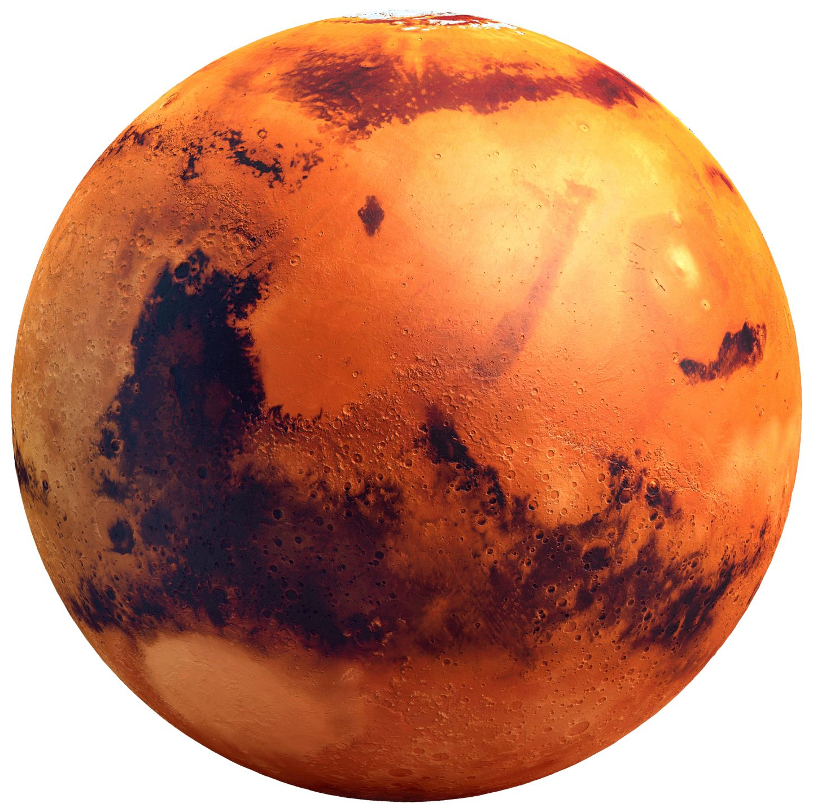

SPACE EXPLORATION
Space exploration is the ongoing discovery and exploration of celestial structures in outer space by means of continuously evolving and growing space technology. While the study of space is carried out mainly by astronomers with telescopes, the physical exploration of space is conducted both by unmanned robotic space probes and human spaceflight.
ONGOING SPACE MISSIONS
1. AKATSUKI
Facts about Akatsuki:
- Japan Aerospace Exploration Agency (JAXA) launched Akatsuki (“Dawn”), a meteorological satellite, in 2010.
- It arrived at its destination, Venus, later that year.
- Space exploration is hard, though, and due to an engine problem, the probe failed to enter Venus’s orbit.
- When Akasuki reached the Cloud Planet and began its maneuver into orbit, the probe had to enter a total communications blackout
- The bad news was that physics were no longer on the probe’s side and another try at Venus was impossible; entering orbit is typically a one-shot deal.
- Akatsuki was put into hibernation mode and a heliocentric orbit (i.e. around the Sun), and the waiting game began.
- If it works, humanity’s understanding of the weather and volcanism of our “sister planet” will increase greatly.
Akatsuki operations:
- Launch
- Orbit insertion failure
- Recovery efforts
- Orbit insertion
- Status

2. JUNO
Facts about Juno:
NASA launched Juno in 2011 as part of its New Frontiers program.
Its mission: to fly to Jupiter and figure out how the planet was formed, what it’s made of, and how its formation affected that of the Solar System.
The real story begins 4.6 billion years ago, when a giant nebula suffered a gravitational collapse.
The resulting bedlam coalesced to form the Solar System. Jupiter is key to understanding how this happened because it was likely the first planet to form.

The exploration of Mars has been an important part of the space exploration programs of the Soviet Union (later Russia), the United States, Europe, Japan and India. Dozens of robotic spacecraft, including orbiters, landers, and rovers, have been launched toward Mars since the 1960s.
Other objects in the Solar System
Other objects include pluto and other asteroids.
Pluto
The dwarf planet Pluto presents significant challenges for spacecraft because of its great distance from Earth (requiring high velocity for reasonable trip times) and small mass (making capture into orbit very difficult at present). Voyager 1 could have visited Pluto, but controllers opted instead for a close flyby of Saturn's moon Titan, resulting in a trajectory incompatible with a Pluto flyby. Voyager 2 never had a plausible trajectory for reaching Pluto.
Some of the first few explorations of space:
| date |
significance |
USSR Mission |
| August 21, 1957 |
First intercontinental ballistic missile (ICBM) |
R-7 Semyorka |
| October 4, 1957 |
First artificial satellite
First signals from space |
Sputnik 1 |
| November 3, 1957 |
First dog in orbit ( Laika) |
Sputnik 2 |
| January 4, 1959 |
First human-made object in heliocentric orbit |
Luna 1 |
Targets of exploration
The most common three targets are:
- The Moon
- The Sun
- Mars
Here is a link for moon:
information on moon
Here is a link for sun:
information on sun
Here are the different physical characteristics of Mars
Internal structure
Like Earth, Mars has differentiated into a dense metallic core overlaid by less dense materials.[36] Current models of its interior imply a core with a radius of about 1,794 ± 65 kilometers (1,115 ± 40 mi), consisting primarily of iron and nickel with about 16–17% sulfur.[37] This iron(II) sulfide core is thought to be twice as rich in lighter elements than Earth's.
Surface geology
Mars is a terrestrial planet that consists of minerals containing silicon and oxygen, metals, and other elements that typically make up rock. The surface of Mars is primarily composed of tholeiitic basalt,[39] although parts are more silica-rich than typical basalt and may be similar to andesitic rocks on Earth or silica glass. Regions of low albedo suggest concentrations of plagioclase feldspar, with northern low albedo regions displaying higher than normal concentrations of sheet silicates and high-silicon glass.
Soil
The Phoenix lander returned data showing Martian soil to be slightly alkaline and containing elements such as magnesium, sodium, potassium and chlorine. These nutrients are found in soils on Earth, and they are necessary for growth of plants.[57] Experiments performed by the lander showed that the Martian soil has a basic pH of 7.7, and contains 0.6% of the salt perchlorate.
Hydrology
Liquid water cannot exist on the surface of Mars due to low atmospheric pressure, which is less than 1% that of Earth's,[65] except at the lowest elevations for short periods. The two polar ice caps appear to be made largely of water.[27][28] The volume of water ice in the south polar ice cap, if melted, would be sufficient to cover the entire planetary surface to a depth of 11 meters (36 ft).
Polar caps
Mars has two permanent polar ice caps. During a pole's winter, it lies in continuous darkness, chilling the surface and causing the deposition of 25–30% of the atmosphere into slabs of CO2 ice (dry ice). When the poles are again exposed to sunlight, the frozen CO2 sublimes, creating enormous winds that sweep off the poles as fast as 400 km/h (250 mph). These seasonal actions transport large amounts of dust and water vapor, giving rise to Earth-like frost and large cirrus clouds. Clouds of water-ice were photographed by the Opportunity rover in 2004.
Volcanoes
The shield volcano Olympus Mons (Mount Olympus) is an extinct volcano in the vast upland region Tharsis, which contains several other large volcanoes. Olympus Mons is roughly three times the height of Mount Everest, which in comparison stands at just over 8.8 km (5.5 mi).[127] It is either the tallest or second-tallest mountain in the Solar System, depending on how it is measured, with various sources giving figures ranging from about 21 to 27 km (13 to 17 mi) high.
Back to top: Back to top
Image of mars

Space missions has become a desirable goal to space agencies all around the world.So aim high and rememeber no dream is impossible..!! Thank you!!